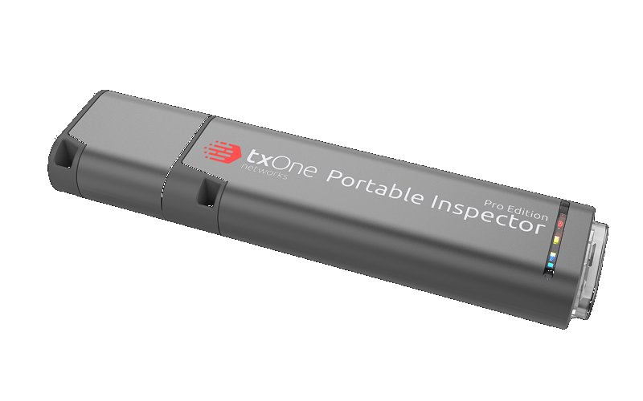
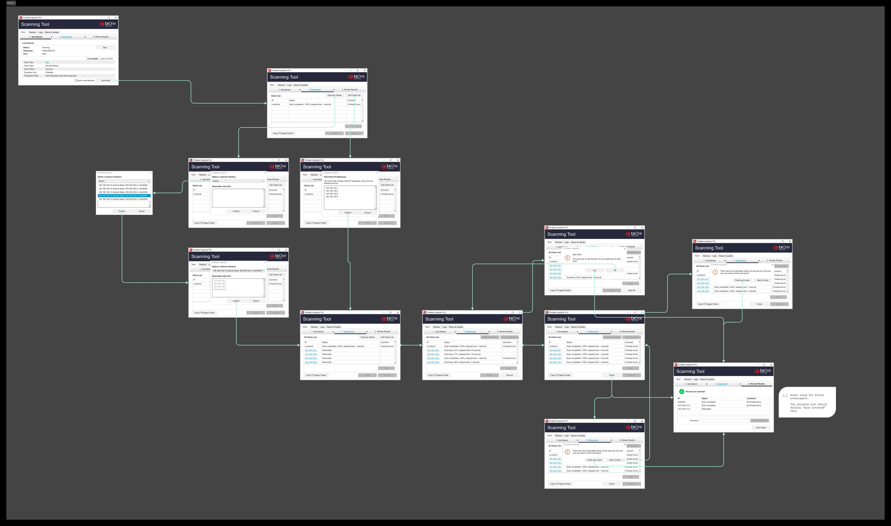
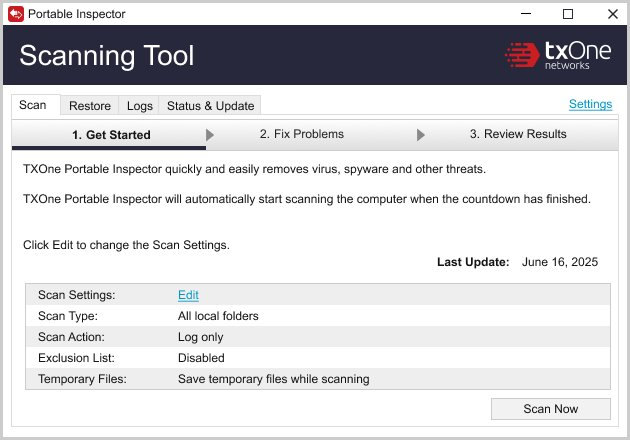
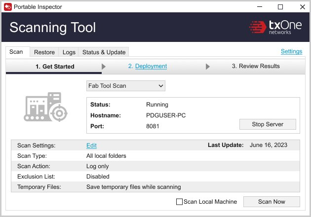
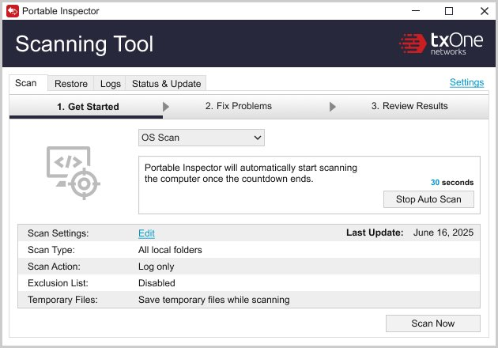

Portable Inspector is a USB scanning device that detects malware on factory machines without requiring software installation — critical for industrial environments where traditional antivirus solutions cannot be deployed on sensitive OT equipment.
The device is used by factory operators who follow security SOPs defined by IT administrators. Since the interface cannot guide operators directly through contextual UI cues, the design challenge was ensuring administrators could configure clear, structured workflows that operators can execute independently and consistently.

Full UI flow for FTS (Fab Tool Scan) — from scan initiation to result review


